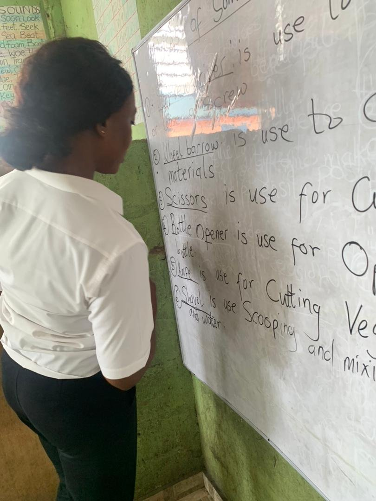
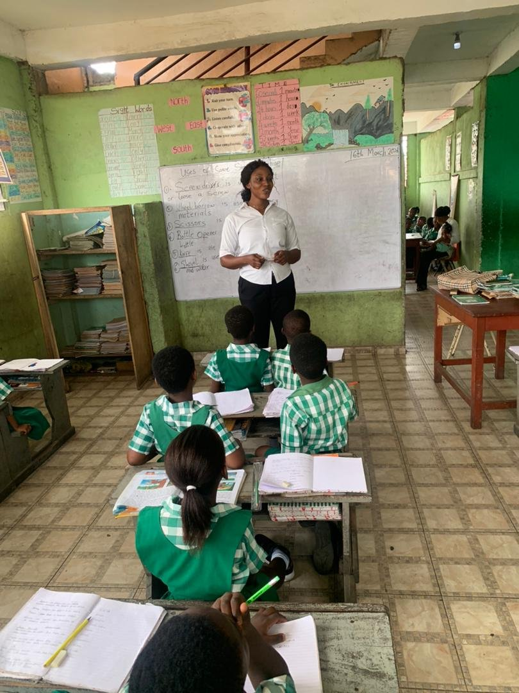

Reflections & Growth
What my internship taught me, and where I want to grow.
Watching experienced teachers and reviewing my own beliefs helped me shape a learner-centred approach to teaching.

Growth Reflection
My teaching philosophy is centred on learner participation, respect, fairness, patience and professionalism. Comparing it with my Year One philosophy, both value professionalism, good classroom management and effective lesson planning.
The differences came mainly from changes in my personal experiences, beliefs, professional knowledge and teaching practice. Discussing them with my partner and mentor helped me develop an effective, learner-centred teaching philosophy.
“As a future facilitator, I am committed to creating a supportive learning environment where every learner is encouraged to participate and achieve their full potential.”
— Nancy Dziku
Areas for Improvement
Areas I want to improve as a future professional teacher.
Classroom Management
Managing and controlling the class.
Lesson Planning
Planning and preparing lessons.
Communication
Communicating effectively with learners and colleagues.
ICT in Teaching
Using ICT in teaching and learning.
Assessment
Assessment and evaluation techniques.
Time Management
Managing time well during lessons.
Teaching Materials
Preparing and using teaching and learning materials.
Reflective Journal
Key moments from my Year 2, Semester 2 Student Reflective Journal.
Teacher Professionalism
The teachers I observed were friendly, respectful and well disciplined, and explained difficult ideas in simple language. Large classes made individual attention hard.
Learning from Playback
Watching recorded lessons helps teachers spot unacceptable behaviours, reflect on their practice and make positive changes that improve teaching and learning.
Reviewing My Philosophy
Discussing with my STS partner and mentor helped me build a more learner-centred philosophy, shaped by our different experiences, beliefs and practices.
Mentor Feedback
My mentor's score sheet